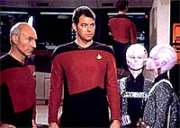
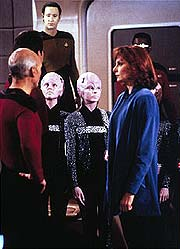
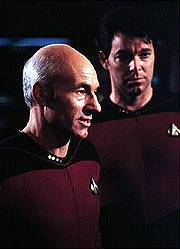
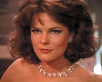
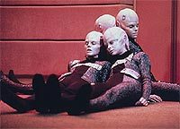

|
MANCHETE
DO EPISDIO
Episdio
usa conceitos ingnuos, mas
mantm esprito humanista de Jornada
Episdio
anterior | Prximo
episdio
Sinopse:
Data Estelar: 41365.9.
A Enterprise visita a Base Estelar 74 para fazer uma atualizao
nos computadores da nave --tarefa a ser cumprida pelos Binrios,
uma raa to dependente dos computadores que precisa trabalhar aos
pares e se comunicar diretamente em linguagem binria.
 Enquanto
os Binrios trabalham, a maior parte da tripulao fica de folga.
Riker vai ao holodeck e cria um tpico bar de jazz de Nova Orleans,
onde ele possa tocar saxofone. L, ele conhece a mulher hologrfica
Minuet, por quem se apaixona. Picard tambm vai ao holodeck e os trs
se entretm numa conversa.
Mas sem o conhecimento de Riker ou de Picard, os Binrios simulam
uma quebra do escudo magntico e evacuam a nave. Uma vez sem os
tripulantes --com exceo dos dois oficiais mais graduados-- a
Enterprise roubada e retirada da doca espacial, sendo levada ao
planeta natal dos Binrios.
 Ao
descobrir o embuste, Riker e Picard acionam o mecanismo de
auto-destruio da nave, para que ela no caia em mos hostis.
Ao se transportarem para a ponte, descobrem que os Binrios esto
incapacitados --assim como todo o planeta.
Aps investigar, a dupla descobre que os Binrios haviam estocado
informaes nos bancos de memria da Enterprise com o objetivo de
reiniciar o computador do planeta aps a interferncia causada por
uma supernova. Eles transferem os dados da Enterprise de volta mquina
planetria, restabelecendo a sade dos Binrios.
Comentrios:
"11001001" se sustenta com base em duas
premissas: a primeira a de que seres que passam a depender 100%
das mquinas para sobreviver correm srios riscos, j que sempre
h a chance de um mau funcionamento. A segunda a de que seres
com raciocnio construdo de forma binria so capazes apenas de
reaes extremas frente a situaes: "sim" ou "no",
correspondendo meramente a "1" ou "0".
 A
primeira das premissas interessante e se mantm de acordo com o
esprito humanista de Jornada nas Estrelas, adotado
principalmente durante a Srie Clssica: nenhuma mquina
capaz de superar o homem em termos de adaptabilidade, no
importando sua velocidade e capacidade de memria superior.
J a segunda um tanto quanto ingnua e se mostra contraditria
ao longo do prprio episdio. Se os Binrios fossem de fato to
extremistas, a ponto de no conseguirem imaginar um meio-termo
entre a Federao ter aceitado ou recusado ajudar seu planeta, no
seriam capazes de elaborar o programa hologrfico de Minuet --um
dos mais "vivos" hologramas j criados, responsvel pelo
primeiro caso de "paixonite hologrfica aguda" de Jornada,
tendo como vtima o comandante Riker.
Alm do mais, pensamentos complexos
no so uma questo de ter algo mais que 1s e 0s. A quantidade de
"uns" e "zeros" que cria a complexidade.
 Apesar
disso, ainda assim h grande dose de adrenalina e aventura durante
este episdio. Cenas como a que Data ordena a evacuao da nave
ou a que Picard e Riker programam a nave para auto-destruio e
depois se transportam para a ponte conseguem manter o telespectador
suficientemente interessado.
H tambm um pouco de tempo para desenvolver as interrelaes
entre os personagens, algo raro durante a primeira temporada.
Crusher demonstra seu apego ao trabalho, Worf e Tasha prosseguem
mostrando a intensificao de sua amizade, e Riker mostra que,
apesar de sua simpatia e carisma, na verdade um sujeito solitrio.
Porm, nem tudo funcionou to bem. Algumas cenas incomodam o
telespectador pelo grau de ingenuidade --Riker deixando Wesley na
ponte para vigiar os Binrios to provinciano quanto algum
ficar em casa para tomar conta de um eletricista ou encanador
chamado para executar um servio. No que isso seja desnecessrio
hoje em dia, mas no sculo 24 no parece que esse comportamento
ainda tenha lugar para existir.
O episdio contm grandes tomadas de efeitos visuais --nada
surpreendente, sabendo que as cenas foram parcialmente recicladas
dos longa-metragens de Jornada. A doca espacial, por exemplo,
a mesma vista em "Jornada nas Estrelas III - Procura
de Spock". Basta reparar que ela orbita um planeta muito
parecido com a Terra, com um satlite muito parecido com a Lua!
 Alis,
a reciclagem dos filmes no ocorreu apenas no aspecto visual. A msica
do primeiro filme de Jornada, composta por Jerry Goldsmith,
tambm d o ar da graa --uma verso mais caprichada do tema
utilizado na apresentao de A Nova Gerao que capaz
de trazer um tom mais pico ao episdio.
No fim das contas, embora no seja um dos maiores (e poucos)
sucessos da temporada, "11001001" se sustenta como
um episdio que pode eventualmente deixar saudade em um f mais
nostlgico.
Citaes:
Worf - "If
winning is not important, then, Commander, why keep score?"
("Se vencer no importante, ento, comandante, por que
contar os pontos?")
Trivia:
 Este episdio permitiu pela primeira vez na srie o ator Jonathan
Frakes (Riker) mostrar seu talento no saxofone.
Este episdio permitiu pela primeira vez na srie o ator Jonathan
Frakes (Riker) mostrar seu talento no saxofone.
A
personagem Minuet apareceria novamente no episdio "Future
Imperfect", do quarto ano.
Os
quatro binrios foram interpretados por mulheres --danarinas--, e
suas vozes foram mecanicamente tratadas para ficarem mais graves.
Gene
Dynarski, o Comandante Quinteros, atuou nos episdios da Srie
Clssica "Mudd's Women",
como Ben Childress, e "The Mark of Gideon", como
Krodak.
Ficha
tcnica:
Escrito por Maurice Hurley &
Robert Lewin
Direo de Paul Lynch
Exibido em 01/02/1988
Produo: 016
Elenco:
Patrick Stewart como
Jean-Luc Picard
Jonathan Frakes como William Thomas Riker
Brent Spiner como Data
LeVar Burton como Geordi La Forge
Michael Dorn como Worf
Gates McFadden como Beverly Crusher
Marina Sirtis como Deanna Troi
Wil Wheaton como Wesley Crusher
Denise Crosby como Natasha "Tasha" Yar
Elenco convidado:
Carolyn McCormick
como Minuet
Gene Dynarski como comandante Quinteros
Katy Beyer como Zero Um
Alexandra Johnson como Um Zero
Iva Lane como Zero Zero
Kelli Ann McNally como Um Um
Jack Sheldon como pianista
Abdul Salaam el Razzac como baixista
Ron Brown como baterista
Episdio
anterior | Prximo
episdio
|